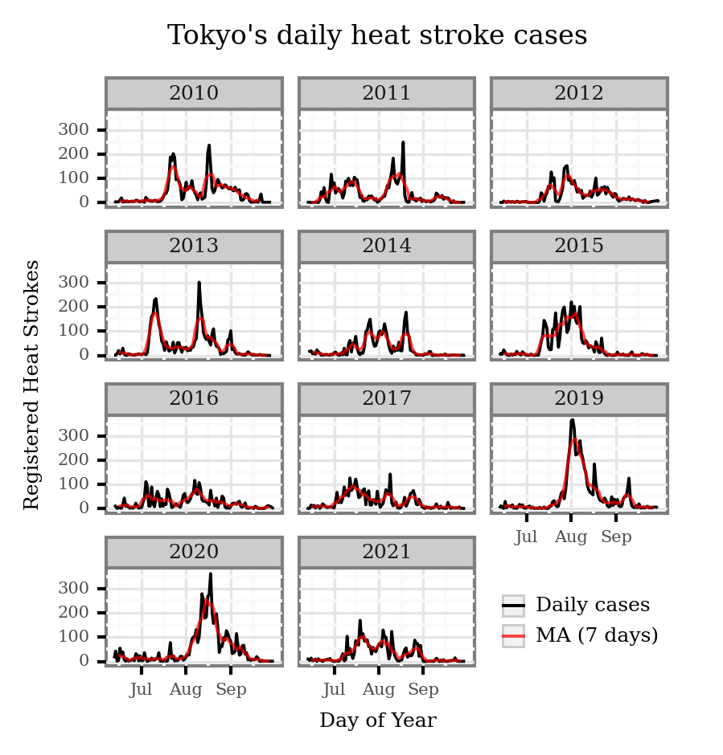
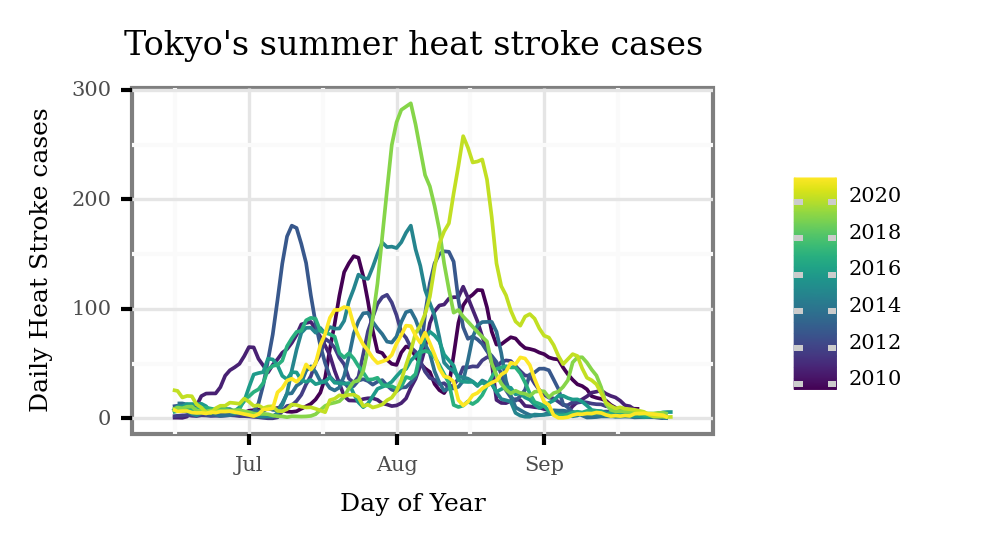
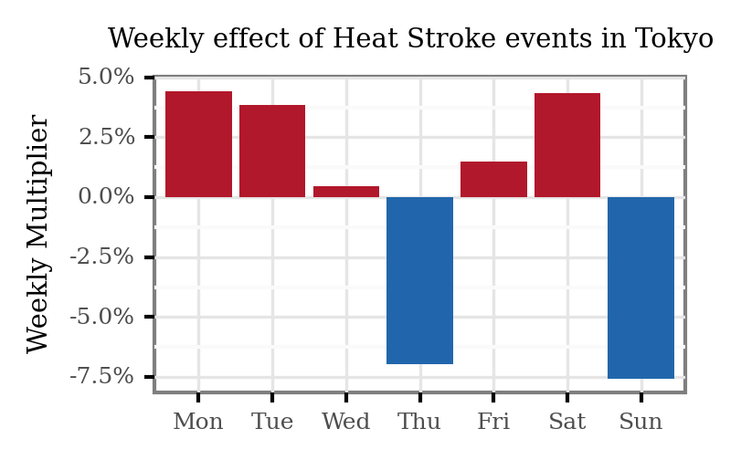
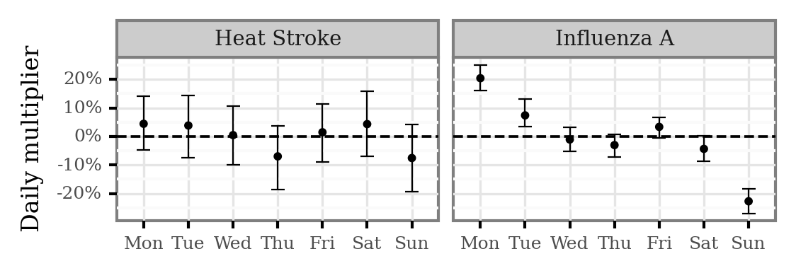
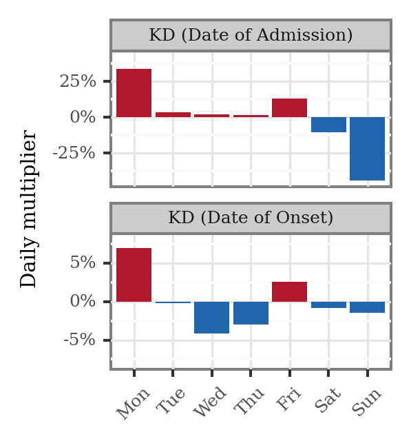
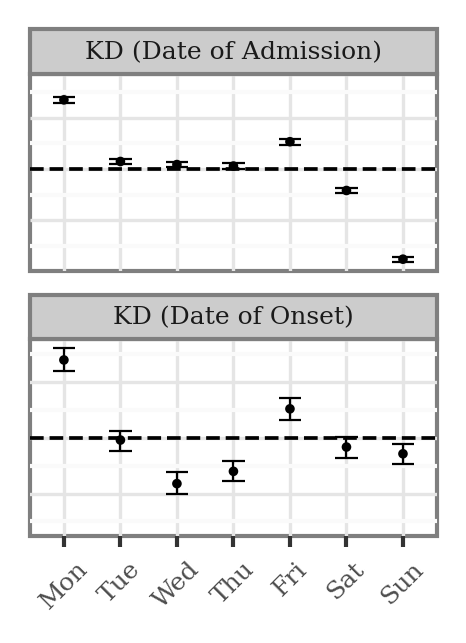

Weekly cycle on control diseases
Contents
Weekly cycle on control diseases#
Preamble#
Imports#
import numpy as np
import pandas as pd
import plotnine as p9
from glob import glob
from prophet import Prophet
from mizani.formatters import percent_format
Pre-sets#
p9.options.set_option('base_family', 'Bitstream Vera Serif')
p9.theme_set(p9.theme_bw()
+ p9.theme(title=p9.element_text(size=9),
axis_text=p9.element_text(size=6),
axis_title=p9.element_text(size=8),
strip_text=p9.element_text(size=7),
legend_key_size=7,
legend_text=p9.element_text(size=6),
legend_title=p9.element_text(size=8),
figure_size=(4, 3),
dpi=300)
)
Data Loading and Wrangling#
pref_codes = {1: 'Hokkaido',
2: 'Aomori',
3: 'Iwate',
4: 'Miyagi',
5: 'Akita',
6: 'Yamagata',
7: 'Fukushima',
8: 'Ibaraki',
9: 'Tochigi',
10: 'Gunma',
11: 'Saitama',
12: 'Chiba',
13: 'Tokyo',
14: 'Kanagawa',
15: 'Niigata',
16: 'Toyama',
17: 'Ishikawa',
18: 'Fukui',
19: 'Yamanashi',
20: 'Nagano',
21: 'Gifu',
22: 'Shizuoka',
23: 'Aichi',
24: 'Mie',
25: 'Shiga',
26: 'Kyoto',
27: 'Osaka',
28: 'Hyogo',
29: 'Nara',
30: 'Wakayama',
31: 'Tottori',
32: 'Shimane',
33: 'Okayama',
34: 'Hiroshima',
35: 'Yamaguchi',
36: 'Tokushima',
37: 'Kagawa',
38: 'Ehime',
39: 'Kochi',
40: 'Fukuoka',
41: 'Saga',
42: 'Nagasaki',
43: 'Kumamoto',
44: 'Oita',
45: 'Miyazaki',
46: 'Kagoshima',
47: 'Okinawa'}
Heat Strokes#
columns = ['Date',
'Prefecture Code',
'total_transported',
'Newborn',
'Infant',
'Juvenile',
'Adult',
'Elderly',
'Unknown',
'Level: Death',
'Level: Severe',
'Level: Moderate',
'Level: Mild',
'Level: Minor',
'Level: Other',
'location: residence',
'location: workplace (1)',
'location: workplace (2)',
'location: educational institution',
'location: public (indoor)',
'location: public (outdoor)',
'location: road',
'location: other']
hs_full = (pd.read_csv('../data/control_diseases/heatstroke/hs_full.csv')
.assign(Date=lambda x: pd.to_datetime(x.Date))
)
hs_tokyo = (hs_full
.query('prefecture=="Tokyo"')
.assign(day_of_year=lambda x: x['Date'].dt.dayofyear)
.assign(week_day=lambda x: x['Date'].dt.day_name())
.assign(month=lambda x: x['Date'].dt.month_name())
.assign(year=lambda x: x['Date'].dt.year)
[['Date', 'day_of_year', 'week_day', 'month', 'year', 'total_transported']]
)
Flu#
ts_flu = (pd.read_csv('../data/control_diseases/influenza_a/flu_a_kawasaki_city.csv')
.assign(date=lambda dd: pd.to_datetime(dd['Year'].astype(str) +
'-' + dd['Month'].astype(str).str.zfill(2) +
'-' + dd['Day'].astype(str).str.zfill(2)))
[['date', 'Total']]
.rename(columns={'date': 'ds', 'Total': 'y'})
)
Analysis#
Visualization#
(hs_tokyo
.loc[lambda dd: dd.day_of_year > 162]
.query('year > 2009')
.groupby('year')
.apply(lambda dd: dd.assign(rolling_cases=lambda dd: dd.total_transported.rolling(7, center=True).mean()))
.reset_index(drop=True)
.melt(['Date', 'day_of_year', 'week_day', 'month', 'year'])
.replace({'variable': {'rolling_cases': 'MA (7 days)', 'total_transported': 'Daily cases'}})
.pipe(lambda dd: p9.ggplot(dd)
+ p9.aes('day_of_year', 'value', color='variable', alpha='variable')
+ p9.geom_line()
+ p9.facet_wrap('year', ncol=3)
+ p9.scale_color_manual(['black', 'red'])
+ p9.scale_alpha_manual([1, .7])
+ p9.scale_x_continuous(breaks=[182, 213, 244], labels=['Jul', 'Aug', 'Sep'])
+ p9.labs(x='Day of Year', y='Registered Heat Strokes', title="Tokyo's daily heat stroke cases", alpha='', color='')
+ p9.theme(figure_size=(3, 3),
axis_title=p9.element_text(size=6),
title=p9.element_text(size=8),
axis_text=p9.element_text(size=5),
strip_text=p9.element_text(size=6),
legend_position=(0.78, .2)))
)

(hs_tokyo
.loc[lambda dd: dd.day_of_year > 162]
.query('year > 2009')
.groupby('year')
.apply(lambda dd: dd.assign(rolling_cases=lambda dd: dd.total_transported.rolling(7, center=True).mean()))
.reset_index(drop=True)
.pipe(lambda dd: p9.ggplot(dd)
+ p9.aes('day_of_year', 'rolling_cases', color='year', group='year')
+ p9.geom_line()
+ p9.scale_x_continuous(breaks=[182, 213, 244], labels=['Jul', 'Aug', 'Sep'])
+ p9.labs(x='Day of Year', y='Daily Heat Stroke cases', title="Tokyo's summer heat stroke cases", alpha='', color='')
+ p9.scale_color_continuous(breaks=range(2010, 2022, 2))
+ p9.theme(figure_size=(2.5, 1.5),
axis_title=p9.element_text(size=6),
title=p9.element_text(size=8),
axis_text=p9.element_text(size=5),
strip_text=p9.element_text(size=6),
legend_text=p9.element_text(size=5, va='baseline'),
)
)
)

Seasonal model fits#
Heat strokes#
hs_ts = (hs_tokyo
.assign(ds=lambda dd: pd.to_datetime(dd.Date))
.set_index('ds')
.resample('D')
.total_transported
.sum()
.rename('y')
['2010':'2020-12-31']
.reset_index()
.rename(columns={'date': 'ds'})
)
m_hs = Prophet(weekly_seasonality=True,
yearly_seasonality=True,
seasonality_mode='multiplicative',
mcmc_samples=100)
m_hs.fit(hs_ts)
coefs_hs = (m_hs
.predict()
.assign(day=lambda dd: dd['ds'].dt.day_name())
[['day', 'weekly']]
.drop_duplicates()
)
predf = (m_hs
.predict()
)
(coefs_hs
.assign(day=lambda dd: pd.Categorical(dd.day.str[:3],
categories=['Mon', 'Tue', 'Wed', 'Thu', 'Fri', 'Sat', 'Sun'],
ordered=True))
.iloc[:7]
.pipe(lambda dd: p9.ggplot(dd)
+ p9.aes('day', 'weekly')
+ p9.geom_col()
+ p9.geom_col(p9.aes(fill='weekly > 0'))
+ p9.scale_fill_manual(['#2166AC', '#B2182B'])
+ p9.scale_y_continuous(labels=percent_format())
+ p9.labs(x='', y='Weekly Multiplier', title='Weekly effect of Heat Stroke events in Tokyo')
+ p9.guides(fill=False)
+ p9.theme(figure_size=(2.5, 1.5), title=p9.element_text(size=7))
)
)

Flu#
m_flu = Prophet(weekly_seasonality=True, yearly_seasonality=True, seasonality_mode='multiplicative',
mcmc_samples=100)
m_flu.fit(ts_flu)
coefs = m_flu.predict().assign(day=lambda dd: dd['ds'].dt.day_name())
(coefs
.assign(day=lambda dd: pd.Categorical(dd.day.str[:3], categories=['Mon', 'Tue', 'Wed', 'Thu', 'Fri', 'Sat', 'Sun'], ordered=True))
.iloc[:7]
.pipe(lambda dd: p9.ggplot(dd)
+ p9.aes('day', 'weekly')
+ p9.geom_col()
+ p9.geom_col(p9.aes(fill='weekly > 0'))
+ p9.scale_fill_manual(['#2166AC', '#B2182B'])
+ p9.scale_y_continuous(labels=percent_format())
+ p9.labs(x='', y='Weekly Multiplier', title='Weekly effect of influenza A in Kawasaki City')
+ p9.guides(fill=False)
+ p9.theme(figure_size=(2.5, 1.5), title=p9.element_text(size=7))
)
)

Both diseases side by side#
(pd.concat([coefs
.iloc[:7]
.assign(disease='Influenza A'),
predf.assign(disease='Heat Stroke').iloc[:7]])
.assign(day=lambda dd: dd['ds'].dt.day_name())
.assign(day=lambda dd: pd.Categorical(dd.day.str[:3],
categories=['Mon', 'Tue', 'Wed', 'Thu', 'Fri', 'Sat', 'Sun'],
ordered=True))
.pipe(lambda dd: p9.ggplot(dd)
+ p9.annotate(geom='hline', yintercept=0, linetype='dashed')
+ p9.geom_point(p9.aes(x='day', y='weekly'), size=.6)
+ p9.geom_errorbar(p9.aes('day', ymax='weekly_upper', ymin='weekly_lower'),
size=.3, width=.3)
+ p9.scale_y_continuous(labels=percent_format())
+ p9.theme(figure_size=(4, 1))
+ p9.labs(x='', y='Daily multiplier')
+ p9.facet_wrap('disease')
)
)

(coefs
.iloc[:7]
.assign(disease='Influenza A')
.append(predf.assign(disease='Heat Stroke').iloc[:7])
.assign(day=lambda dd: dd['ds'].dt.day_name())
.assign(day=lambda dd: pd.Categorical(dd.day.str[:3],
categories=['Mon', 'Tue', 'Wed', 'Thu', 'Fri', 'Sat', 'Sun'],
ordered=True))
.pipe(lambda dd: p9.ggplot(dd)
+ p9.geom_col(p9.aes(x='day', y='weekly', fill='weekly > 0'))
+ p9.scale_fill_manual(['#2166AC', '#B2182B'])
+ p9.scale_y_continuous(labels=percent_format())
+ p9.theme(figure_size=(4, 1))
+ p9.labs(x='', y='Daily multiplier')
+ p9.facet_wrap('~disease')
+ p9.guides(fill=False)
)
)
Equivalent analysis for KD#
kd_japan = pd.read_excel('../../japan_air_sampling/data/kawasaki_disease/kd_japan_2018.xlsx')
kd_daily = kd_japan.set_index('DOO').assign(cases=1).resample('D').cases.sum()['2011':'2018-11']
kd_daily_doa = kd_japan.set_index('date_admit').assign(cases=1).resample('D').cases.sum()['2011':'2018-11']
ts_kdo = (kd_daily.reset_index().rename(columns={'DOO': 'ds', 'cases': 'y'}))
ts_kda = (kd_daily_doa.reset_index().rename(columns={'date_admit': 'ds', 'cases': 'y'}))
coefs = []
for key, data in zip(['DOA', 'DOO'], [ts_kda, ts_kdo]):
for year in range(2011, 2019):
m = Prophet(weekly_seasonality=True,
yearly_seasonality=True,
seasonality_mode='multiplicative',
mcmc_samples=100)
d = data.query('year(ds) == @year')
m.fit(data)
coefs.append(m
.predict()
.iloc[:7]
.assign(variable=key)
)
coefs_kd = pd.concat(coefs)
limits_df = pd.DataFrame(dict(variable=['DOO', 'DOA'], y_min = [-.08, -.42], y_max=[.08, .42]))
(coefs_kd
.assign(day=lambda dd: dd['ds'].dt.day_name())
.assign(day=lambda dd: pd.Categorical(dd.day.str[:3],
categories=['Mon', 'Tue', 'Wed', 'Thu', 'Fri', 'Sat', 'Sun'],
ordered=True))
.merge(limits_df)
.replace({'DOA': 'KD (Date of Admission)', 'DOO': 'KD (Date of Onset)'})
.pipe(lambda dd: p9.ggplot(dd)
+ p9.geom_col(p9.aes(x='day', y='weekly', fill='weekly > 0'))
+ p9.scale_fill_manual(['#2166AC', '#B2182B'])
+ p9.scale_y_continuous(labels=percent_format())
+ p9.labs(x='', y='Daily multiplier')
+ p9.geom_blank(p9.aes(y='y_min'), inherit_aes=False)
+ p9.geom_blank(p9.aes(y='y_max'), inherit_aes=False)
+ p9.facet_wrap('variable', ncol=1, scales='free_y')
+ p9.theme(figure_size=(1.75, 2),
axis_title=p9.element_text(size=7),
axis_text_x=p9.element_text(size=6, angle=45),
strip_text_x=p9.element_text(size=6))
+ p9.guides(fill=False)
)
)

(coefs_kd
.assign(day=lambda dd: dd['ds'].dt.day_name())
.assign(day=lambda dd: pd.Categorical(dd.day.str[:3],
categories=['Mon', 'Tue', 'Wed', 'Thu', 'Fri', 'Sat', 'Sun'],
ordered=True))
.merge(limits_df)
.replace({'DOA': 'KD (Date of Admission)', 'DOO': 'KD (Date of Onset)'})
.pipe(lambda dd: p9.ggplot(dd)
+ p9.annotate(geom='hline', yintercept=0, linetype='dashed')
+ p9.geom_point(p9.aes(x='day', y='weekly'), size=.3)
+ p9.geom_errorbar(p9.aes('day', ymax='weekly_upper', ymin='weekly_lower'),
size=.3, width=.4)
+ p9.scale_y_continuous(labels=percent_format())
+ p9.geom_blank(p9.aes(y='y_min'), inherit_aes=False)
+ p9.geom_blank(p9.aes(y='y_max'), inherit_aes=False)
+ p9.theme(figure_size=(1.75, 2),
axis_title=p9.element_text(size=7),
axis_text_x=p9.element_text(size=6, angle=45),
axis_text_y=p9.element_blank(),
axis_ticks_major_y=p9.element_blank(),
strip_text_x=p9.element_text(size=6),)
+ p9.labs(x='', y='')
+ p9.facet_wrap('variable', ncol=1, scales='free_y')
)
)
